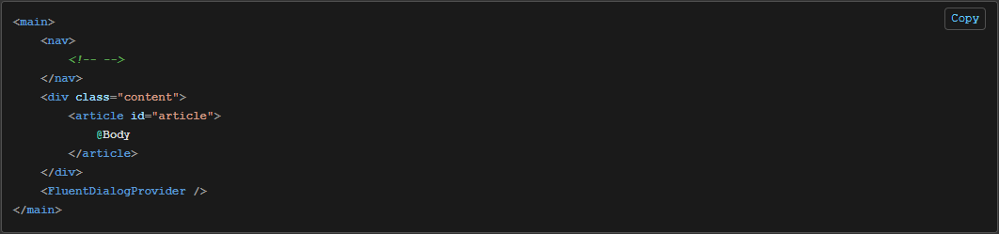

I've been working with Blazor for a number of years, you can see Utility Blazor and .NET Blazor Interactive etc for examples.
When the FluentUI Blazor was released I started upgrading a few of the sites to use the new theme/components but hadn't spent much time as the originally functionality was working so wanted to spend my time adding new features, not refactoring existing.
Recently I've started a brand new project and thought I'd make it from scratch. One piece of functionality I wanted was displaying code snippets with syntax hightlighting functionality. Previously I've used SyntaxHighlighter from @Alex Gorbatchev but there are many others, one being Highlight.js (GitHub Code).
A Discussion was raised on their GitHub repo page:
Does this library has any component to display code snippet? #3043 https://github.com/microsoft/fluentui-blazor/discussions/3043
Firstly you need to copy a number of the files to your project.
I have another project for Components.
You also need some custom js for the app, this needs to go into your 📂 wwwroot/js/.
In your index.html add a reference to the js. Makes sure to update the [PROJECT_NAME] to the relevant value you have.
<!-- highlight -->
<script type="text/javascript" src="_content/[PROJECT_NAME]/js/highlight-extensions.js"></script>
For example they have the following in _Layout.cshtml #L39 or index.html #L59 depending on whether it's a Server or Client app.
<!-- highlight -->
<script type="text/javascript" src="_content/FluentUI.Demo.Shared/js/highlight-extensions.js"></script>
The next thing to update is the reference to the .js file in the .cs code file. Find your CodeSnippet.razor.cs #L35. Update FluentUI.Demo.Shared/Components/ to the path where you have stored yours.
_jsModule = await JSRuntime.InvokeAsync<IJSObjectReference>("import",
"./_content/FluentUI.Demo.Shared/Components/CodeSnippet.razor.js");
Next you just need to use the component!
Add the CodeSnippet tag with the Language you need. You can find a list of Supported Languages on their docs site.
<CodeSnippet Language="razor">
@(@"
...
")
</CodeSnippet>
Example:
<CodeSnippet Language="razor">
@(
@"<main>
<nav>
<!-- -->
</nav>
<div class=""content"">
<article id=""article"">
@Body
</article>
</div>
<FluentDialogProvider />
</main>"
)
</CodeSnippet>
Then you will have some beautiful code with a copy button too.

You can even use their StaticAssetsService to pull in .txt file versions of the code.
Thanks to @vnbaaij, @dvoituron and others for help with my noob questions.
🔗 Links
- https://dotnet.microsoft.com/en-us/apps/aspnet/web-apps/blazor
- https://learn.microsoft.com/en-us/aspnet/core/blazor/?view=aspnetcore-9.0
- https://github.com/dotnet/aspnetcore
- https://github.com/microsoft/fluentui-blazor
- https://learn.microsoft.com/en-us/fluent-ui/web-components/integrations/blazor
- https://learn.microsoft.com/en-us/shows/open-at-microsoft/exploring-the-fluent-ui-blazor-components
- https://www.fluentui-blazor.net/
- https://www.nuget.org/profiles/fluentui-blazor
- https://github.com/microsoft/fluentui-blazor/discussions/3043